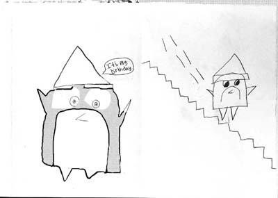

« Previous Demo:
Custom Login Form Styling
Back to the Codrops Article
PFold:
Paper-Like Unfolding Effect
Paper-like unfolding effect experiment
Demo 1
Demo 2
Demo 3
CSS 3D transforms are not supported in your browser
Sorry, only modern browsers.

Clickme2
x
Demo 1:
Three folding steps with the directions left, bottom and right